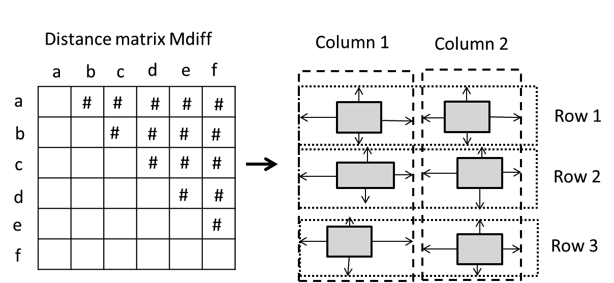
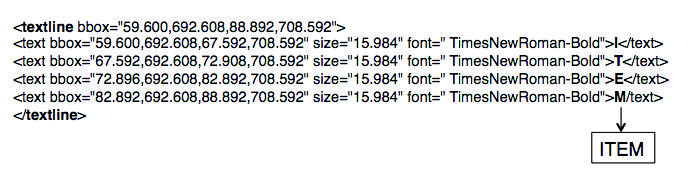
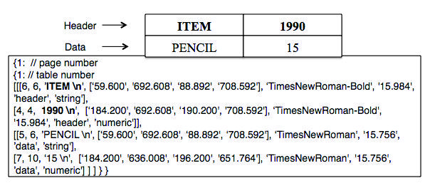

Proceedings of the Twenty-Ninth International Florida Artificial Intelligence Research Society Conference
TAO: System for Table Detection and Extraction from PDF Documents
Martha O. Perez-Arriaga, Trilce Estrada, and Soraya Abad-Mota Departments of Computer Science, and Electrical and Computer Engineering University of New Mexico {marperez, estrada, soraya}@cs.unm.edu
Abstract
Digital documents present knowledge in most areas of study, exchanging and communicating information in a portable way. To better use the knowledge embedded in an ever-growing information source, effective tools for automatic information extraction are needed. Tables are crucial information elements in documents of sci- entific nature. Most publications use tables to represent and report concrete findings of research. Current meth- ods used to extract table data from PDF documents lack precision in detecting, extracting, and representing data from diverse layouts.
We present the system TAble Organization (TAO) to automatically detect, extract and organize information from tables in PDF documents. TAO uses a process- ing, based on the k-nearest neighbor method and lay- out heuristics, to detect tables within a document and to extract table information. This system generates an en- riched representation of the data extracted from tables in the PDF documents. TAO's performance is compara- ble to other table extraction methods, but it overcomes some related work limitations and proves to be more ro- bust in experiments with diverse document layouts.
as figures and text. Also, the PDF documents present more challenges to detect tables due to the lack of table tags. Our approach focuses on PDF documents.
Current methods (Liu et al. 2007; Oro and Ruffolo 2009) for automatic table detection and extraction in PDF docu- ments are useful, but still have some restrictions. These re- strictions include detection of tables only in documents with single column, detection relying on patterns not present in all tables, and extraction lacking elements needed to accu- rately reconstruct the information provided in a table. To overcome these limitations, we propose the TAble Organi- zation (TAO) system that not only provides automatic table detection and extraction in digital documents, but also gener- ates a detailed representation of table elements for structural and functional analyses.
Scientific digital documents allow us to present and share in- formation in different areas of knowledge. The ever-growing number of documents available on the Internet makes it diffi- cult to analyze them at the same pace they are produced. The myriad topics and ways in which digital documents present the information hinder the extraction and management of their contents.
TAO is efficient, comprehensive and robust. It is efficient because it takes advantage of the structure formed by tables, avoiding an exhaustive search of table elements where there is no such structure. It is comprehensive because it discovers metadata (e.g., header, font, data type, coordinates) and data from tables embedded in a document. Finally, TAO is robust because it does not depend on fixed patterns or layouts to detect tables, and it is able to detect them on different lay- out documents (see Section 2). Even though scientific pub- lications are an important target for TAO, its methods serve the purpose of extracting information from any PDF doc- ument containing tables. TAO is compared to related work (see Sections 3,4). TAO's output portable format facilitates information organization and sharing, and further analysis (see Section 5).
Our main contributions are: 1) an adaptive method to de- tect and extract tables' information, 2) an annotated repre- sentation of the information extracted from tables for further structural, functional, and semantic analyses, and 3) a web- based prototype of the system at http://integra.cs.unm.edu.
Scientific publications use tables to represent results and associations. Tables are simple representations of informa- tion that show relationships between concepts. People iden- tify tables within documents easily, but given the number of documents to analyze, the identification is time consuming.
Performing this task automatically is difficult due to the vari- ety of document formats (e.g., PDF, HTML), tables' layouts and types of information.
The main challenge in detecting tables in digital docu- ments is that tables are mixed with other elements, such Copyright c(cid:2) 2016, Association for the Advancement of Artificial Intelligence (www.aaai.org). All rights reserved.
The TAble Organization (TAO) system is capable of detect- ing and recognizing tables within PDF documents. Table detection is the process of identifying tables from a docu- ment, and table recognition of identifying and extracting the cells contained in a table (Hu et al. 1999). To acomplish this processing, TAO combines a supervised machine learning method with layout heuristics, and consists of three main modules: 1) document conversion, 2) table detection, and 3) table extraction, (see Figure 1).
TAO's input is a PDF document. Using PDFMiner, the PDF document is converted to an XML format contain- ing all elements in the document (e.g., characters, figure's placeholders, layouts). PDFMiner's output includes separate XML tags for every character and every space. The second module, table detection, parses this large XML file and iden- tifies table candidates, storing them in a per-page fashion.
The third module, table extraction, uses the table candidates to find particular cells and their content. Once the tables are identified, this module augments tables with informa- tion regarding their metadata and position within the doc- ument. TAO's output is a JSON document with the table's information and augmented information extracted from the PDF. Optionally, this information can be stored in a NOSQL database for easy access and search. In the following sec- tions, we describe the methods built into the system to per- form automatic table detection and extraction.
are composed of text tags. Each text tag contains a single character. Characters grouped in text lines form one or more words. A text line also includes its corresponding bounding box (bbox) coordinates. PDFMiner provides coordinates, text font, and text size for each character.
The layout includes elements such as text groups and text boxes. Text box elements of the layout are also found in the body. The difference is that in the layout, text boxes are or- ganized into text groups, indicating the coordinates of the information structure. In the body, text boxes contain all the page information, character by character. PDFMiner's output is comprehensive and long. For example, for a 10-page IEEE research paper, PDFMiner outputs approxi- mately 60,000 lines, which varies with a document's con- tent. Therefore, it is practically impossible to parse, detect and extract information manually, and not a trivial task to do so automatically. In the remainder of this section, we use TAO to parse this XML output and generate cleanly ex- tracted and annotated table structures.
Our table detection module identifies tables within the lay- out of the XML output provided by PDFMiner. This output does not discriminate between text in normal paragraphs, ta- bles or figures. The document structure elements are rep- resented by group boxes and text boxes. Thus, TAO per- forms a structural analysis to identify sets of text boxes that are probable table candidates. The table detection process includes four steps: 1) comprehensive identification of text boxes within text groups, 2) distance calculation among text boxes, 3) identification of structural relationships, and 4) generation of table candidates.

Figure 1: The TAble Organization (TAO) system
Document conversion uses the PDFMiner (Shinyama 2010) extraction tool, which allows converting PDF documents to text, HTML, XML, and tagged PDF formats. PDFMiner outputs the coordinates of the text, font style and size for each character into an XML file. We evaluated other con- verters (Noonburg 2009; Litchfield 2004), but we selected PDFMiner because it analyzes the structure of the informa- tion on each page, providing a detailed hierarchy of grouped elements based on their spatial relationships in the doc- ument. In addition, PDFMiner has been maintained and widely adopted.
PDFMiner converts a PDF file into an XML representa- tion, and generates a body and a layout for each page of the document. The body is formed by text boxes, text lines and text (see Figure 3 for an example). Text boxes include an identifier (id), and the coordinates (x1, y1) represent top- left and (x2, y2) bottom-right corners of the bounding box (bbox). Text boxes are composed of text lines. Text lines In PDFMiner's output, the coordinates of a page are top- left (0,0) and bottom-right (approximately 750,850). Text boxes are contained within text groups in the layout of each page. A text box may contain one or more table elements.
For each text group, we identify the set T of all text boxes in it. In the table detection process, we first create a list con- taining all the text box identifiers (id) on each page. Then, for each pair (a,b) of text boxes ∈ T , we compute their Man- hattan distance using their top-left (x1, y1) and bottom-right (x2, y2) coordinates. We store the proximity calculations in an upper-traingular matrix Mdif f . Each element in the ma- trix contains the distance of the top-left coordinates between a and b for the first corners of the text boxes Mdif f [a, b, 1] = [(a.x1 − b.x1), (a.y1 − b.y1)] and the distance of the bottom- right coordinates between a and b for the second corners of the text boxes Mdif f [a, b, 2] = [(a.x2 −b.x2), (a.y2 −b.y2)].
The distance matrix Mdif f contains the proximity of text box pairs, defining global structural relationships (i.e., rows and columns) among multiple text boxes. To identify mul- tiple columns, a layout heuristic detects columns when two or more text boxes have an alignment, (i.e., text boxes inter- sect horizontally). In the same way, a heuristic for vertical intersection indicates that the elements form a row. Through experimentation we learned that the alignments have mini- mal variation because the coordinates of each page are fixed.
Because columns are generally aligned to the left, right or center, we find more variation in the column alignment than in rows. Therefore, we detect columns, comparing alignment with a threshold distance of at most t = ±23 points to either side (i.e., about 2 characters with font size 10). For rows, the thresholds are smaller because they have minimal top or bottom alignments. Thus, to identify rows, the distance threshold is t ± 10 (i.e., 1 character) for the separation above a text box and t ± 2 for below.

Figure 2: Identification of structural relationships among text boxes Pairs whose proximity is less than or equal to the thresh- olds are aligned, forming either a row or a column. All the text boxes in the same row or column are joined. The aligned text boxes represent the table candidates. Figure 2 shows six text boxes (a,b,c,d,e,f) with each one displaying their align- ments as vertical or horizontal thin arrows. Boxes whose dis- tance is within the threshold limits are grouped either verti- cally or horizontally, forming a preliminary structural orga- nization of the table, which contains two columns and three rows.
more efficient with 4 neighbors, uniform weighting, and Eucledian distance. Our analysis to determine parameters found no improvement to give more weight to closer neigh- bors. Therefore, the K-NN regression was applied to learn the threshold t, (i.e., maximum alignment in a column), to identify the ids of text lines in the same column. We use the scikit tool (Pedregosa et al. 2011). The training data con- tains 300 different samples with the font size of different tables and their alignment between columns. To avoid noise, we take the maximum alignment from the samples with the same font size, yielding 55 unique samples. Recall that the coordinates (x1, y1) represent the top-left and (x2, y2) bottom-right corners of the bbox. For each pair of text lines (p, q) ∈ Md2, if p.x1 − q.x1 < t and p.x2 − q.x2 < t then (p, q) are in the same column, we add their ids to the list of columns LC. Similarly, if p.y1 − q.y1 < f ontsize and p.y2 − q.y2 < f ontsize then (p, q) are in the same row, we add their ids to the list of rows LR. The font size repre- sents the threshold of row separation within tables because the alignment cannot be greater than the height of a single row, which measures at least the font size. To identify cells and reconstruct text within cells such as words and numbers, we use the lists of columns LC and rows LR obtained in the previous step. A cell in a table is the intersection of a column c in LC and a row r in LR, cell[r, c] ← LR(r) ∩ LC(c).
The process outputs a file containing all the cells grouped by column and row, and its associated text line. The grouped text lines allow us to explore their associated text tags and extract all the words in a particular cell.
The table extraction module of TAO recognizes the actual tables, locating the cells (i.e., the intersection between a row and a column) that belong to a particular table, and storing the tables found on each page of the document. The text con- tained in each cell of the table is extracted and saved in an explicit data structure, including additional information re- lated to the cell. The table extraction module performs the Table recognition and Table composition tasks.
In text extraction, for each text line in a particular cell, we identify its children text tags and extract a) the particular character, b) text box id, c) text line id, d) bbox coordinates, e) text font, and f) text size. PDFMiner may generate text line identifiers unsorted. Thus, finding two consecutive text line ids in a table cell does not mean that the coordinates of these text lines are sorted in the original Cartesian plane. To solve this issue, we organize table elements using coordinates to produce sorted and aligned text for the table cell. Figure 3 shows the text reconstruction process for a cell composed of one text line containing four text tags.

In Table recognition, we use the body of the XML out- put produced by PDFMiner and table candidates obtained from the Table detection module. To extract words located in cells of the table, we follow a two-phase process: first, we identify cells and then reconstruct the text within each cell.
To detect cells in the table, we use a similar approach to the one explained in the previous section, but instead of compar- ing and aligning text boxes, we compare text lines. The text boxes are a coarse representation of possible table layouts, while text lines are a more accurate way to detect specific table elements (i.e., words in table cells). Thus, for this step we also calculate an upper-triangular distance matrix Md2 to store the proximity between pairs of text lines.
Because we identify table information in diverse formats, a learning process to find table alignments is appropriate.
We analyzed the k-nearest neighbor (K-NN) and locally weighted regressions methods, the former being faster and Figure 3: Text reconstruction from a text line in a table cell To avoid redundant information, we verify that the cells contained in rows match the ones in columns. The cells are grouped by row, preserving the coordinates of each cell to locate the table cells' positions. Finally, the cells identified in a table and their contents are stored indicating the page on which they appear in the original document. Up to this point, multiple tables can still be stored together if they appear on the same page.
Table composition performs table separation in the doc- ument, and classifies elements of tables as header or data.
Header refers to a label representing table information (i.e., row or column headers), while data is the actual content or body of the table. The composition task retrieves all cells on a particular page, sorts coordinates of text cells grouped by row, and calculates row separation. If, for a specific pair of neighbor rows, this separation is larger than a threshold ttable, we classify and assign an identifier for a new table.
To learn ttable, the K-NN regression method was applied as in table recognition. The training data contains 300 differ- ent samples of font size and row separation between tables.
To avoid noise, we have 55 unique font sizes related to its maximum row separation.
Once each table is separated as an entity, cells are classi- fied into data or header. The bold font style of the text in the cell classifies text as a header, even though it is not at the top row. This heuristic may fail for customized documents, but is general enough to capture relevant cell differences in documents. A cell is classified as a header when it it is in a top position that groups some cells under it. Using pattern matching, we also classify the cell content by data type (i.e., numeric or string of characters).
The output of this component is an explicit table repre- sentation that can be easily ported to a database for effi- cient search. The file contains a) extracted text of table cells grouped by row, indicating header (i.e., metadata) or data;
b) provenance information associated with the cells consist- ing of identifiers of text boxes and text lines from where the text was identified; c) position of tables on each page; and d) metadata attributes including coordinates of the text, text size, text font, and data type. Figure 4 shows the extracted information from four table cells.
ticular table. For the recognition task, table cells recognized were used to measure precision and recall.
We compared and contrasted the performance of TAO with respect to two other table extractors: Pdf-trex and Ta- bleSeer (see Section 4). Pdf-trex code was unavailable, thus we report the precision and recall published in (Oro and Ruf- folo 2009). Because TableSeer's code was publicly available at http://tableseer.soft112.com/, we produced its outputs for all experiments.
The first dataset TREX described in (Oro and Ruffolo 2009) was publicly available at http://staff.icar.cnr.it/ruffolo/ pdftrex/dataset.zip. This dataset was intended to be a stan- dard benchmark for automatic table extraction with 100 PDF single-column documents in the English and Italian lan- guages, containing more than 100 pages with around 150 tables. TREX does not reflect the format of standard research papers, but, rather, technical reports containing tables with a variety of formats and styles.
The second dataset, obtained from the Cornell University Library site at http://arxiv.org/, comprised of twenty scien- tific publications selected randomly. Two of them did not contain tables. This dataset, to which we refer to as COR- NELL, included one- and two-column documents containing more than 300 pages with 79 tables. This dataset allowed us to measure TAO's performance in multiple page scien- tific publications. Additionally, we used the COMBINED dataset results from the merging of the TREX and COR- NELL datasets to generate a more diverse one.
We prepared the gold standard, (i.e., the actual informa- tion from the tables in the datasets). A program compared the gold standard against the cells extracted and organized by TAO, and assisted to calculate the recall and precision.

Figure 4: Sample of table cells represented by TAO
3 Evaluation
To evaluate the usefulness and generality of TAO compared to other PDF table extractors, a systematic assessment of its capability to detect tables and content was performed. De- tecting tables means identifying all the tabular elements in the PDF documents, whether or not their content was recog- nized accurately. Thus, we computed precision and recall.
Precision is the fraction of the correct number of tables iden- tified divided by the total number of tables found. Recall is the fraction of correct tables found, divided by the total number of tables in the documents. The F1-measure com- bines precision and recall. Recognizing tables means cor- rectly identifying and associating cell's content with a par- In the first set of experiments, we compared TAO, Pdf-trex, and TableSeer using the TREX dataset. The TAO's output from this dataset yielded an F1-measure of 91.9% for ta- ble detection and 86.4% for recognition. Pdf-trex's results in (Oro and Ruffolo 2009) had an F1-measure of 91.7% for table detection and of 84.6% for recognition. For this dataset, we found 148 tables and Pdf-trex reports 164. We believe that this difference is because we did not account lists as tables. TAO's reliance on PDFMiner can be a limita- tion because this converter cannot extract information from a PDF file when the document is password protected or mal- formed. Still, PDFMiner converted 89 PDF documents out of 100. While TAO detected 137 tables out of the 148 and also identified 12, 504 correct table cells out of 14, 466, Ta- bleSeer performed badly for this set of experiments identi- fying only 18 tables, whose F1-measure was 21.6% for ta- ble detection and 5.0% for recognition. This poor perfor- mance is due to the fact that this dataset does not adhere to the common rigorous formatting standards for scientific publications. Therefore, TAO performed similarly to Pdf- trex, but better than TableSeer. From the first experiment, we corroborated that TAO adapts the thresholds depending on the different PDF documents' font sizes. Because tables are composed of rows and columns in any language, TAO's structural approach was able to detect tables in Italian and Table 1: Experiments using COMBINED
Table Detection
| Table Detection | |||
| Method | Precision | Recall | F1measure |
| TAO | 0.903 | 0.886 | 0.895 |
| TableSeer Table Recognition | 0.962 | 0.453 | 0.616 |
| Method | Precision | Recall | F1measure |
| TAO | 0.884 | 0.894 | 0.889 |
| TableSeer | 0.436 | 0.465 | 0.450 |
English. The language poses a challenge for semantic anal- ysis on table's cells.
Our second experiment used the CORNELL dataset.
TAO's output yielded an F1-measure of 87.0% for Table de- tection and 91.1% for recognition. TableSeer yielded an F1- measure of 84.9% for detection and 89.5% for recognition.
TAO detected 67 tables, and TableSeer 62. Also, TAO de- tected 4, 738 out of 6, 003 text cells. For this and the next experiments, Pdf-trex was not evaluated because it was un- available. One limitation of TAO using this dataset is that it produced more false positives (i.e., figures and equations) than TableSeer. To solve this problem, we need to detect the rows that do not contain table cells, but other elements, such as graphs. TAO may extract the information of two different cells into a unique cell. Even though this issue is related to PDFMiner's output, we need to analyze cells further to pro- duce more accurate information. Although it is uncommon to find two consecutive horizontal tables, TAO needs to learn how to separate them. The distance between table rows and two consecutive tables may vary in a single document, mak- ing it more difficult for TAO to separate tables consistenly.
However, TAO still performs satisfactorily.
Finally, for completeness and to quantitatively assess the generality of our method, we report aggregated experiments using the COMBINED dataset. Table 1 reports a summary for table detection and recognition for TAO and TableSeer.
TAO is more robust and general because TableSeer depends on particular keywords to perform accurate Table Detection.
TAO recognized and extracted 17, 242 correct table cells, while TableSeer recognized only 6, 389. Similarly, TAO is more general and robust than Pdf-trex because it can han- dle double-column documents and Pdf-trex cannot, as doc- umented in (Oro and Ruffolo 2009).
The K-NN method produced rapid and accurate results using training data with characteristics of different table for- mats. The training sets can increment data from more table formats. TAO's prototype enables to submit a PDF docu- ment online, and receive the output by email with the orga- nized table's information in JSON.
elements in tables (Wang 1996), and describes the main table functions: to identify, understand, search and compare infor- mation. Hurst describes a model to represent tables, includ- ing graphical, physical, functional, structural and semantic components (Hurst 2000). We focus on table identification, which can be divided into table detection and recognition (Hu et al. 1999). TAO automatically performs these tasks, which are also known as table processing in (Embley et al.
2006). Table processing analyzes the physical and logical structures of a table. The physical structure of a table is the location of regions containing parts of the table, and the log- ical structure is the type of regions that compose the table (Zanibbi, Blostein, and Cordy 2004). Zanibbi et al. classify table processing according to the approach used to recognize tables, such as layout (Hu et al. 1999), heuristics (Liu et al.
2007) and statistical methods (Liu et al. 2009). TAO uses a combination of heuristics with the k-nn statistical method.
Different document formats contain tables in HTML, XML, text and PDF. We focus on the PDF format. Most PDF documents lack tags, which can indicate the existence of ta- bles, such as in HTML. To facilitate the management and understanding of table information some works convert ta- bles from PDF documents to another format, such as HTML (Hassan 2003). The converters assist extracting table infor- mation from digital documents, and include PDFBox used in (Liu et al. 2007), Jpedal used in (Hassan 2003), PDFlib TET used in (Liu et al. 2009), and PDFMiner (Shinyama 2010) used in TAO. PDFMiner also converts PDF documents to HTML. However, it does not identify table tags. The con- verters are powerful, but they may suffer from text sequence errors (Liu, Mitra, and Giles 2008), which occur when the converter tool shows the text in a different order than the original PDF document. However, some converters show co- ordinates to process the right order.
This section describes briefly a) general definitions of ta- ble identification, b) document converters, and c) works that perform table identification and to which we compare TAO's performance.
Wang analyzes the importance of the physical and logical TableSeer (Liu et al. 2007), Pdf-trex (Oro and Ruffolo 2009) and TAO identify tables in PDF documents. Besides performing table identification, TableSeer is a table search engine that crawls digital libraries, indexes and ranks tables.
TableSeer gets words from a PDF converter, and forms lines.
From the lines, TableSeer detects table structure and meta- data using heuristics rules based on font size, fixed pattern matching (e.g., TABLE), and white spaces. TAO is indepen- dent of using pattern matching to detect tables. TableSeer discovers other metadata for table search, such as captions and the publication's name. It also determines data type, lay- out metadata (e.g., number of columns and rows), and the position of a table within the document. However, for the ta- ble's content it only shows the coordinates of the columns.
An extracted cell represented in a different position makes it difficult to recover the actual cell's position in a table. TAO's output contains metadata for a table's cell (e.g., coordinates, font style), providing the precise location and attributes re- quired to reconstruct tables in their original format. Table- Seer and TAO depend on PDF converters.
Pdf-trex detects text and table areas, aligning and group- ing text with spatial relationships. Tableseer and Pdf-trex search elements in a table line by line, which differs from TAO's top-down approach which identifies structure before analyzing the specific lines that may belong to a table. TAO and Pdf-trex use similar heuristics to detect columns and rows, allowing them to detect tables in documents in the English and Italian languages. Also, Pdf-trex uses an ag- glomerative hierarchical clustering algorithm to build seg- ments and blocks that form table structure. Similar to TAO, Pdf-trex generates coordinates for an extracted table's infor- mation. However, Pdf-trex's output lacks other metadata at- tributes to recover a table's format and style. While Pdf-trex extracts tables only in single-column documents, TAO con- siders single- and multiple-column documents. A work in (Fang et al. 2011) detects multiple-columns. However, this work is unavailable for comparison.
TAO's web-based prototype enables a user to upload a pdf document, and receive organized table information by email.
TAO can be configured to process multiple PDF documents and generate an output for each. TableSeer and Pdf-trex pro- duce XML code to represent tables, while TAO produces a JSON format.
References
Embley, D. W.; Hurst, M.; Lopresti, D.; and Nagy, G. 2006.
Table-processing paradigms: a research survey. Interna- tional Journal of Document Analysis and Recognition (IJ- DAR) 8(2-3):66–86.
Fang, J.; Gao, L.; Bai, K.; Qiu, R.; Tao, X.; and Tang, Z. 2011. A table detection method for multipage pdf docu- ments via visual seperators and tabular structures. In Doc- ument Analysis and Recognition, 2011. 11th International Conference on Document Analysis and Recognition, 779– 783. IEEE.
Hassan, T. 2003. Pdf to html conversion. Technical report, University of Warwick.
Hu, J.; Kashi, R. S.; Lopresti, D. P.; and Wilfong, G. 1999.
Medium-independent table detection. In Electronic Imag- ing, 291–302. International Society for Optics and Photon- ics.
The TAble Organization (TAO) system was developed to au- tomatically detect, extract, and organize tables from PDF documents. TAO benefits from PDFMiner to convert PDF documents to XML format. We defined heuristics, training data, and learning methods to process the XML, detecting the location of the tables within the document and extract- ing the corresponding table cells.
TAO was implemented using document conversion, table detection and extraction; it generates its output in a JSON document for information interoperability. The table infor- mation from the original PDF document is preserved and enriched with data not displayed in the PDF document, such as text font and coordinates in table cells. The extra informa- tion helps locate the table cells' position and format for bet- ter representation. The output document can easily be stored and managed in a database to facilitate analysis, sharing, and collaboration.
We evaluated TAO on varied PDF documents with more than 225 tables, and compared its performance to related work. TAO overcame related work limitations. It performed satisfactorily not only on scientific documents, but also on non-scientific documents. In addition, it extracted tables' in- formation on PDF documents with large and small number of pages, with single and double columns, and with various tables' formats.
We plan to use TAO's output to recover a table cells' infor- mation. To better understand tables (i.e., semantic analysis), we intend to discover context and semantic relationships for a table's information. The relationships exist in the text of a table's document, and related datasets. The semantic analy- sis of tables enables the integration of scientific knowledge with the semantic web.
Hurst, M. F. 2000. The interpretation of tables in texts.
Ph.D. Dissertation, University of Edinburgh, Scotland.
Litchfield, B. 2004. Pdfbox.
Liu, Y.; Bai, K.; Mitra, P.; and Giles, C. L. 2007. Tableseer: automatic table metadata extraction and searching in digi- tal libraries. In Proceedings of the 7th ACM/IEEE-CS joint conference on Digital libraries, 91–100. ACM.
Liu, Y.; Bai, K.; Mitra, P.; and Giles, C. L. 2009. Improving the table boundary detection in pdfs by fixing the sequence error of the sparse lines. In Document Analysis and Recog- nition, 2009. 10th International Conference on Document Analysis and Recognition., 1006–1010. IEEE.
Liu, Y.; Mitra, P.; and Giles, C. L. 2008. Identifying table boundaries in digital documents via sparse line detection.
In Proceedings of the 17th ACM conference on Information and knowledge management, 1311–1320. ACM.
Noonburg, D. 2009. xpdf: A c++ library for accessing pdf.
Oro, E., and Ruffolo, M. 2009. Pdf-trex: An approach for recognizing and extracting tables from pdf documents. In Document Analysis and Recognition, 2009. 10th Interna- tional Conference on Document Analysis and Recognition., 906–910. IEEE.
Pedregosa, F.; Varoquaux, G.; Gramfort, A.; Michel, V.; Thirion, B.; Grisel, O.; Blondel, M.; Prettenhofer, P.; Weiss, R.; Dubourg, V.; et al. 2011. Scikit-learn: Machine learn- ing in python. The Journal of Machine Learning Research 12:2825–2830.
Shinyama, Y. 2010. Pdfminer: Python pdf parser and ana- lyzer.
Wang, X. 1996. Tabular abstraction, editing, and format- ting. Ph.D. Dissertation, University of Waterloo, Ontario.
Zanibbi, R.; Blostein, D.; and Cordy, J. R. 2004. A survey of table recognition. Document Analysis and Recognition 7(1):1–16.
The authors thank the anonymous reviewers for useful com- ments to improve this work. Martha Perez-Arriaga thanks the National Council of Science and Tecnology in Mexico (CONACyT).